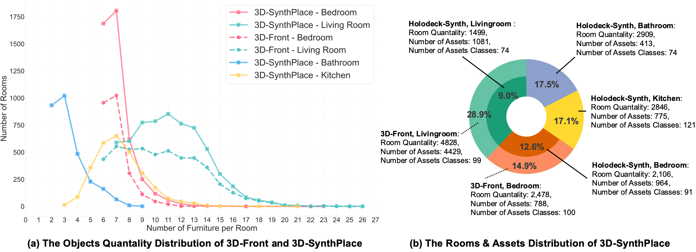
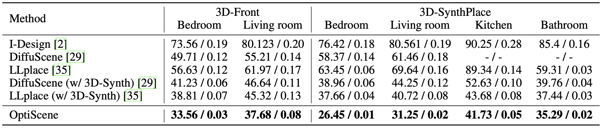
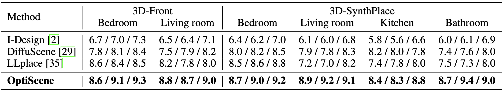
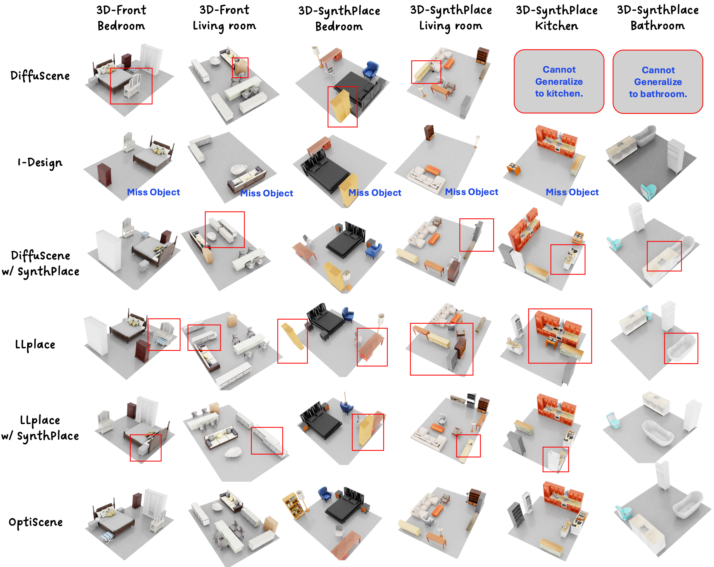

LLM-driven Indoor Scene Layout Generation via Scaled Human-aligned Data Synthesis and Multi-Stage Preference Optimization
NeurIPS 2025
Abstract
Automatic indoor layout generation has attracted increasing attention due to its potential in interior design, virtual environment construction, and embodied AI. Existing methods fall into two categories: \textit{prompt-driven} approaches that leverage proprietary LLM services (e.g., GPT APIs), and \textit{learning-based} methods trained on layout data upon diffusion-based models. Prompt-driven methods often suffer from spatial inconsistency and high computational costs, while learning-based methods are typically constrained by coarse relational graphs and limited datasets, restricting their generalization to diverse room categories. In this paper, we revisit LLM-based indoor layout generation and present 3D-SynthPlace, a large-scale dataset that combines synthetic layouts generated via a `GPT synthesize, Human inspect' pipeline, upgraded from the 3D-Front dataset. 3D-SynthPlace contains nearly 17,000 scenes, covering four common room types—bedroom, living room, kitchen, and bathroom—enriched with diverse objects and high-level spatial annotations. We further introduce OptiScene, a strong open-source LLM optimized for indoor layout generation, fine-tuned based on our 3D-SynthPlace dataset through our two-stage training. For the warum-up stage I, we adopt supervised fine-tuning (SFT), which is taught to first generate high-level spatial descriptions then conditionally predict concrete object placements. For the reinforcing stage II, to better align the generated layouts with human design preferences, we apply multi-turn direct preference optimization (DPO), which significantly improving layout quality and generation success rates. Extensive experiments demonstrate that OptiScene outperforms traditional prompt-driven and learning-based baselines. Moreover, OptiScene shows promising potential in interactive tasks such as scene editing and robot navigation, highlighting its applicability beyond static layout generation. The dataset and the code will be released soon.
How OptiScene works?

Data distribution analysis of 3D-SynthPlace.
Quantitative comparison with other methods
Comparison with [FID ↓ / OOR ↓] across 3D-Front \& 3D-SynthPlace.
Comparison with GPT-[Func ↑ / Layout ↑ /Aes. ↑] on 3D-Front \& 3D-SynthPlace.
Qualitative comparison with other methods.

More qualitative results.
BibTeX
@article{yang2025llm,
title={LLM-driven Indoor Scene Layout Generation via Scaled Human-aligned Data Synthesis and Multi-Stage Preference Optimization},
author={Yang, Yixuan and Luo, Zhen and Ding, Tongsheng and Lu, Junru and Gao, Mingqi and Yang, Jinyu and Sanchez, Victor and Zheng, Feng},
journal={arXiv preprint arXiv:2506.07570},
year={2025}
}